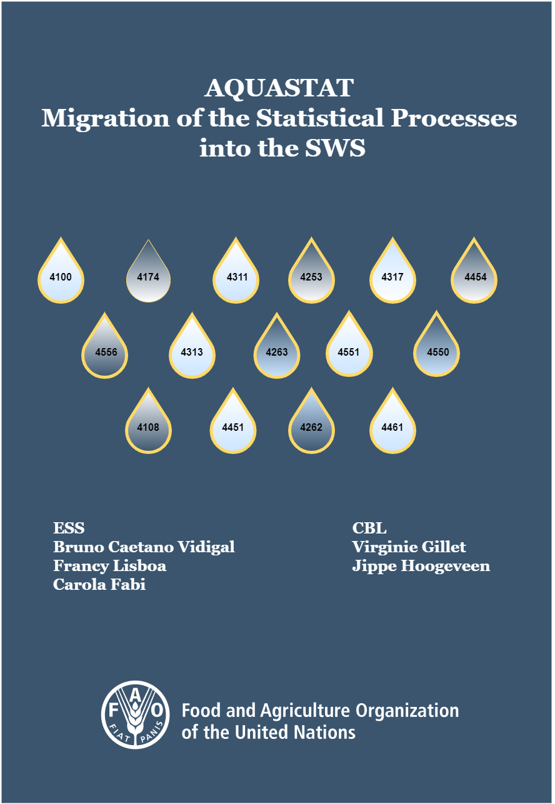

AQUASTAT: Migration of the Statistical Processes into the SWS
2020-11-10
Welcome
AQUASTAT - FAO Global’s Water Statistics System is migrating its statistical processes into the Corporate Statistical Working System (SWS). This document describes the main institutional actors involved in the migration as well as the AQUASTAT - SWS resources (code lists, datasets, data tables) that have been created to support the SWS plugins (R modules) to meet technical unit requirements. Furthermore, the SWS plugins are presented in the form of chapters providing a detailed description of their workflows involving input -> processing -> output as well as results showing whether the modules have lived up to expectations.
IMPORTANT: Use the Chrome browser to have a correct vizualization of HTML outputs in this online document.
